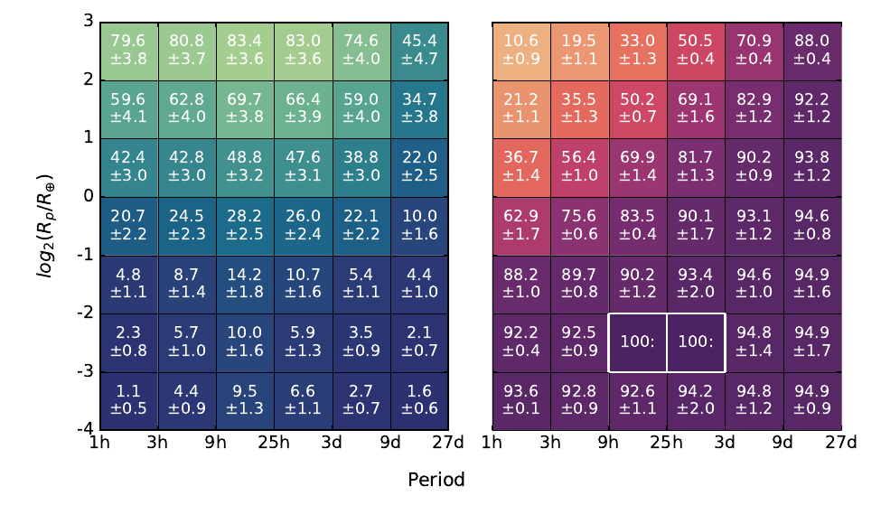
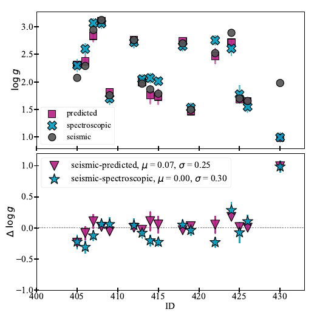
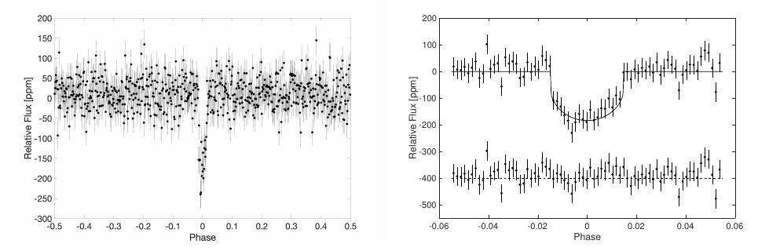

Welcome TESS followers to our latest news bulletin!
This week, we are looking at three recent papers from the archive. Enjoy!
The frequency of transiting planetary systems around polluted white dwarfs (Robert et al. 2024) :
About one in four white dwarfs exhibit dust and gas emission, metals in the photosphere, and even transit events, suggesting the presence of planetary systems. These signatures offer a rare glimpse into the formation and architecture of said systems, and their corresponding evolution as their host stars evolve into white dwarfs. Robert et al. (2024) present a detailed investigation aimed at constraining the frequency of planetary systems around polluted white dwarfs based on established transit-searching methods. The authors utilized high-cadence photometry from ULTRACAM, ULTRASPEC, and TESS of 313 metal-polluted white dwarfs to identify potential transiting exoplanets or debris. TESS observed the targets at 2-min and 20-sec cadence (214 targets for the latter), with a median observing coverage of 2.3 sectors per target. Robert et al. (2024) used the BLS and Lomb-Scargle algorithms to search for transit-like signals, and performed injection-and-retrieval analysis to evaluate the corresponding detection efficiency. The authors recovered two of the three systems known to exhibit irregular transit events, ZTF J0328–1219 and WD 1054–226, as well as two known ZZ Ceti pulsators (G29-38 and KX Dra), and rule out single-transit candidates. Robert et al. (2024) note that their search did not yield new candidates and suggest that the non-detection of the third known transiting system, WD 1145+017, is potentially due to changes in the corresponding circumstellar activity. Based on their findings, the authors estimate that the transit fraction for polluted white dwarfs is about 1%, indicating that while metal pollution is common among these stars, the corresponding frequency of short-period, transiting planetary systems around is rather low. Capitalizing on data from TESS, the authors were able to suggest that such planets are likely engulfed during the red giant phase of stellar evolution, leaving them little chance to survive.
The accreted Galaxy: An overview of TESS metal-poor accreted stars candidates (de Brito Silva et al. 2024) :
The formation history of the Milky Way is an active field of research, with multiple findings suggesting an extragalactic origin for a number of stars through multiple accretion and/or merger events. Distinguishing between the various potential progenitors of these events generally involves multiple observational constraints, including chemical compositions, ages, and dynamical properties. de Brito Silva et al. (2024) present a comprehensive study of the merger history of the Milky Way based on observations of 30 metal-poor accreted star candidates obtained from TESS, Gaia, and the MIKE spectrograph on the 6.5-m Clay telescope. TESS observed the targets in the Southern Continuous Viewing Zone and previous work based on asteroseismological analysis provided the ages for 2 stars, as well as the frequency of maximum power and the large frequency separation for 21 stars. de Brito Silva et al. (2024) calculated the effective temperatures, surface gravities, and velocities of the targets, and estimated the corresponding total energy (E), eccentricity and angular momentum along the z-direction (Lz). The surface gravities, in particular, were estimated by three different methods – asteroseismic, spectroscopic, and predicted. To determine the respective stellar ages, the authors utilized the asteroseismic measurements of the frequency of maximum power and large frequency separation, and the corresponding three estimates of the surface gravities. de Brito Silva et al. (2024) found that the orbital eccentricities for 28 of the 30 targets exceed 0.7, supporting the accretion hypothesis, note that the majority of their targets occupy a E-Lz parameter space occupied by Gaia-Sausage-Enceladus stars, and identify two stars as potential members of the Sequoia system. Utilizing TESS data, the authors were able to obtain valuable new insight into the formation history of the Milky Way.
GJ 238 b: A 0.57 Earth Radius Planet Orbiting an M2.5 Dwarf Star at 15.2 pc (Tey et al. 2024) :
The relatively small size and mass of terrestrial exoplanets make it quite difficult to find them either in transit across their host star, or through radial velocity measurements. Yet these are particularly interesting targets both for comparative studies with the terrestrial planets in the Solar System and, more broadly, in the search for life outside the Earth. Tey et al. (2024) present the discovery and validation of the smallest transiting planet detected by TESS to date, GJ 238 b. The target is close to the Southern Ecliptic pole and was observed by TESS in 25 cycles during Cycles 1 and 3 in short cadence. The target star, GJ 238, is an M dwarf with a spectral class of M2.5 at a distance of 15.2 pc, and has a relatively high proper motion (~900 mas/year). GJ 283 has a mass of 0.42 MSun, radius of 0.43 RSun, effective temperature of 3485 K, and [Fe/H] of 0.15. To estimate the orbital and physical properties of the system, the authors combined TESS data with archival and follow-up observations from UKST, Las Cumbres Observatory, WASP, ESO 3.6-m/HARPS, and SOAR/HSCam. Additionally, Tey et al. (2024) ruled out common sources of false positives, validated the planet candidate statistically, confirmed that the transit-like events originate from the target star, and that the transiting object is both smaller and less massive than a giant planet. The planet, GJ 238 b, has an orbital period of 1.74 days, radius of 0.57 REarth, and estimated equilibrium temperature of 758 K. Thanks to TESS, Tey et al. (2024) were able to discover and validate the smallest transiting exoplanet detected by the mission to date.

Fig. 1: Taken from Robert et al. (2024). Left panel: detection sensitivity for transiting planets around polluted white dwarfs from TESS in terms of planet radius as a function of the orbital period. Right panel: corresponding upper limits on the occurrence frequency. The two bins outlined with white contain detected transits.

Fig. 2: Taken from de Brito Silva et al. (2024). Upper panel: Comparison between the surface gravities of 30 metal-poor accreted star candidates observed by TESS estimated from three different methods – asteroseismic (grey circles), theoretical predictions (magenta squares), and spectroscopic (blue x symbols). Lower panel: the corresponding differences.

Fig. 3: Taken from Tey et al. (2024). Left panel: phase-folded and binned TESS lightcurve of the transiting exoplanet GJ 238 b. Right panel: same as left panel but zoomed-in on to highlight the transit and the corresponding best-fit model.